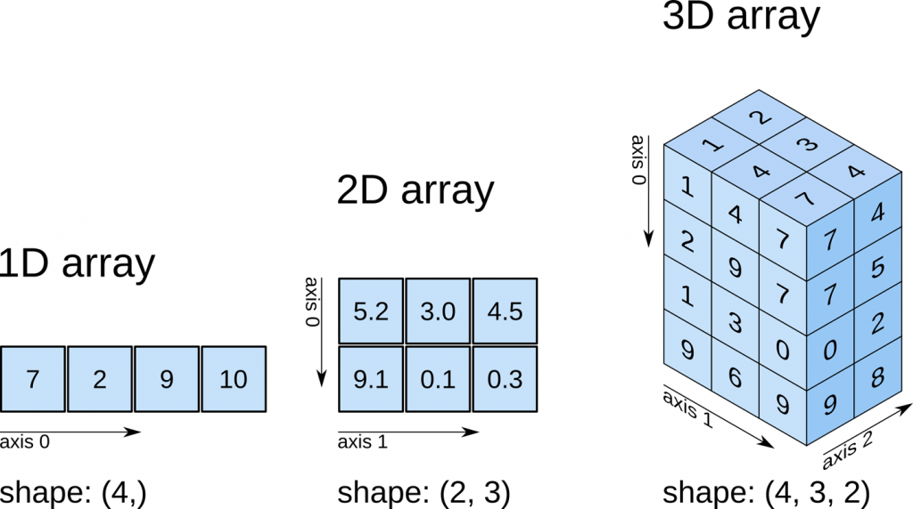
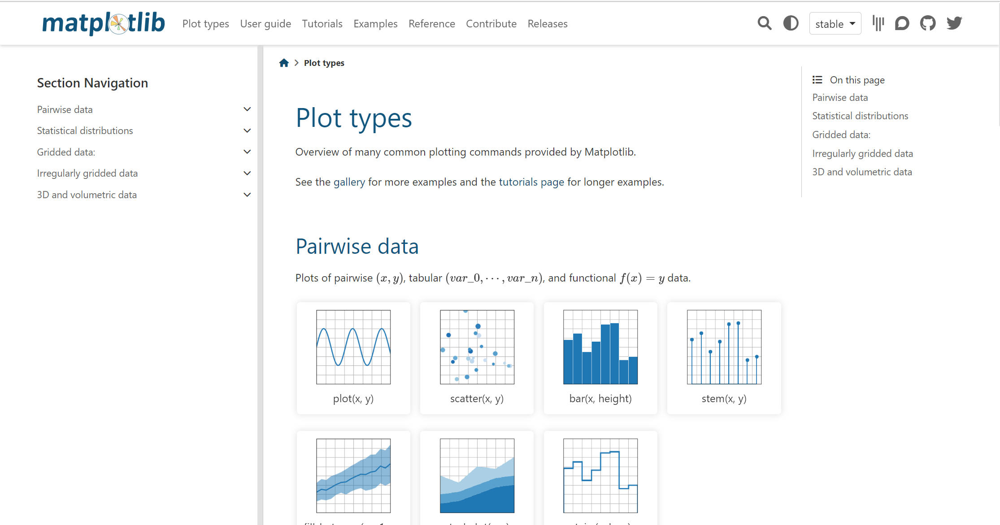
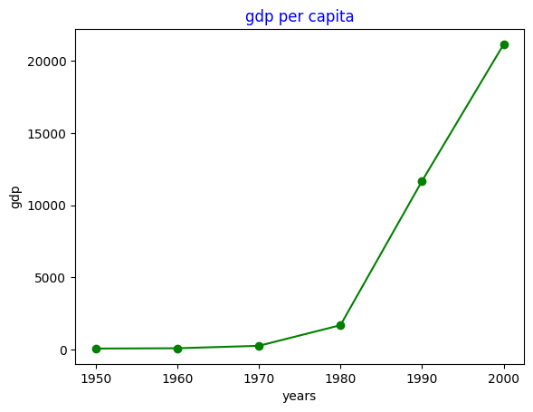

1 2 | from google.colab import drive drive.mount('/content/drive') | cs |

: 다차원 배열을 쉽게 처리하고 효율적으로 사용할 수 있도록 지원하는 파이썬의 패키지
1 2 3 4 5 6 7 8 9 10 11 12 13 14 15 16 17 18 19 20 21 | import numpy as np a=np.array([1,402,2,1]) #1차원, 괄호() 안에 들어있는 건 리스트 b=np.array([[2,4,7,8,5],[1,3,7,8,9,],[3,5,7,8,24]]) #2차원 # 여러 차수의 행렬을 만들때, 각각의 방에는 같은 수의 숫자가 있어야한다 c=np.array([[[13,4,5],[1,34,5,]],[[3,5,612],[435,62,76]]]) #3차원 list=[3,5,6,8] d=np.array(list) #np.array([3,5,6,8])이랑 같은거다. print(a) print(b[1]) #b의 1번 방 (컴퓨터의 시작은 0부터) print(c[0][1]) #c의 0번 방 안에 있는 1번째방 print(b[1][0:2]) #b의 1번 방에서 0번에서 2번바로 전까지 가지고 오기 """ 결과값 [ 1 402 2 1] [1 3 7 8 9] [ 1 34 5] [1 3] """ | cs |
1 2 3 4 5 6 7 8 9 10 11 12 13 14 15 16 17 18 19 20 21 22 23 24 25 26 27 28 29 30 31 32 33 | import numpy as np score_np = np.array([10,20,30,40,50]) score2_np = np.array([60,30,20,10,40]) total_np = score_np + score2_np print(total_np) print(total_np/2) print(total_np.shape) #행렬의 차원 """ 결과값 [70 50 50 50 90] [35. 25. 25. 25. 45.] (5,) """ salary = np.array([100,200,50]) salary += 100 print(salary) print(salary>=250) print(salary[salary>=200]) """ 결과값[200 300 150] [False True False] [200 300] """ y = np.array([[1,2,3],[4,5,6],[7,8,9]]) print(y[y>5]) """ 결과값 [6 7 8 9] """ | cs |
: 쉽고 직관적인 관계형 또는 분류된 데이터로 작업 할 수 있도록 설계된 빠르고 유연하며 표현이 풍부한 데이터 구조를 제공하는 파이썬 패키지
1 2 3 4 5 6 7 8 9 10 11 12 13 14 15 16 17 18 19 20 21 22 23 24 25 26 27 | import pandas as pd dat=pd.DataFrame([[8.54, 5.6],[19.51, 18.29],[5.37,5.47],[5.36, 5.14], [11.74,5.04]], #데이터 수치 columns=["Classroom","Hallway"], #가로(행) index=["MK","NH","JK","JH","AY"]) #세로(열) print(dat) print('--------------------------------------------------') dat['Sum']=dat['Classroom']+dat['Hallway'] #Sum행 추가 print(dat) """ 결과값 Classroom Hallway MK 8.54 5.60 NH 19.51 18.29 JK 5.37 5.47 JH 5.36 5.14 AY 11.74 5.04 -------------------------------------------------- Classroom Hallway Sum MK 8.54 5.60 14.14 NH 19.51 18.29 37.80 JK 5.37 5.47 10.84 JH 5.36 5.14 10.50 AY 11.74 5.04 16.78 """ | cs |
: 파이썬에서 데이터를 시각화해주는 라이브러리 / 아래 사이트에서 그릴 수 있는 그래프 볼 수 있음

1 2 3 4 5 6 7 8 9 10 11 12 13 14 | import matplotlib.pyplot as plt years = [1950,1960,1970,1980,1990,2000] gdp = [67.0,88.0,257.0,1686.0,11684.0,21156.0] plt.plot(years,gdp, color='green',marker='o', linestyle='solid') #plot에 들어갈 자료와 그래프 색, 그래프 스타일 설정 plt.title('gdp per capita',color='blue') #제목 설정 plt.xlabel('years') #x축에 쓰일 자료 설정 plt.ylabel('gdp') #y축에 쓰일 자료 설정 plt.savefig('파일 이름 적기.png',dpi=600) #파일 png형식으로 저장하기 plt.show() #그래프 보여주기 """ 결과값 <아래 사진첨부> """ | cs |
